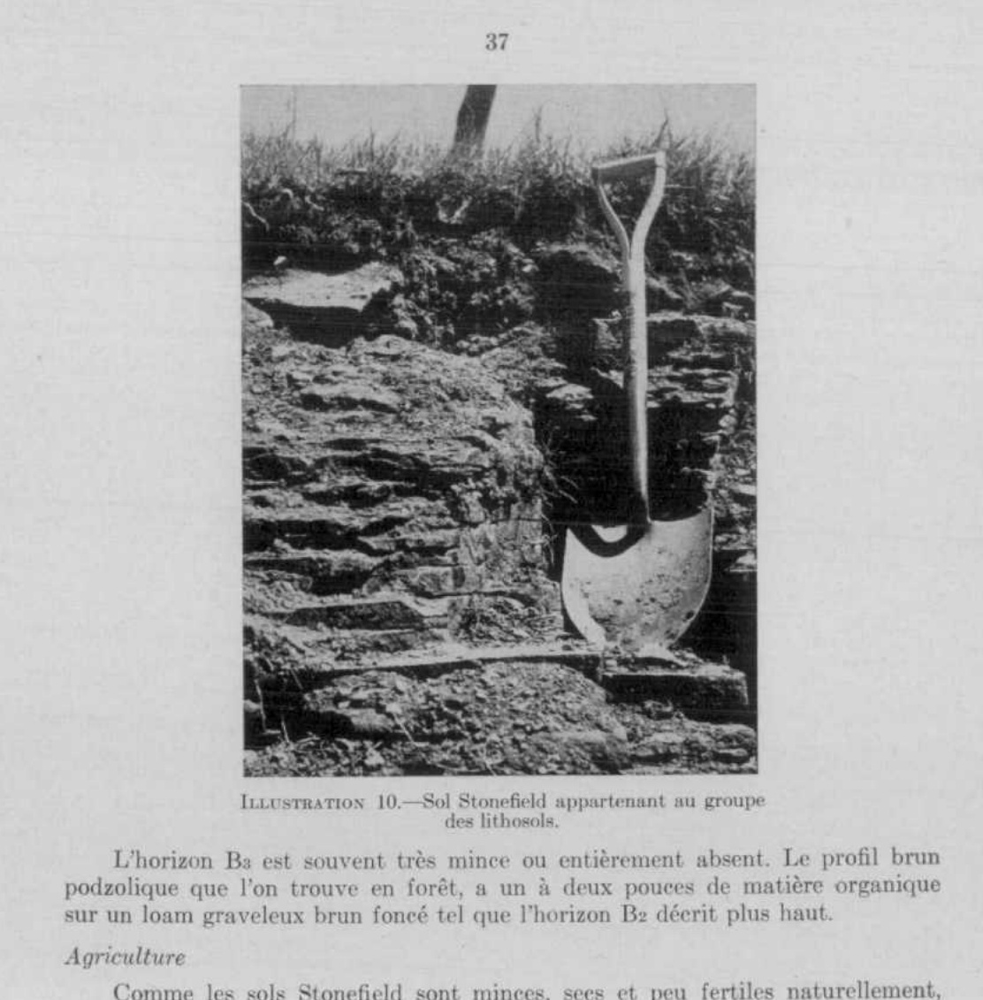

Identification & Caractéristiques Générales
La série Stonefield s'est développée sur des tills minces ou des dépôts résiduels et littéraux d'une épaisseur généralement restreinte, variant de quelques pouces à cinq pieds, reposant sur une assise rocheuse composée de schiste et de grès. La pierrosité de surface et la charge caillouteuse incluent des blocs erratiques de granit et de gneiss d'origine précambrienne, transportés par les glaciers. Ces sols occupent des positions topographiques vallonnées à accidentées, à des altitudes s'échelonnant de 174 à 300 pieds, notamment dans le secteur compris entre Chatham et Greece Point. Le couvert arborescent naturel associé comprend des essences de feuillus, telles que l'érable à sucre, l'érable rouge, le hêtre, l'orme et le tilleul, ainsi que des conifères incluant l'épinette, le thuya et le pin.
Sur le plan morphologique, le profil type se caractérise par une texture de loam sableux (terre franche sableuse) et présente un drainage naturel excessif associé à une perméabilité rapide. La capacité de rétention en eau est faible, ce qui expose les profils à des déficits hydriques fréquents et prononcés durant la saison estivale. La profondeur utile est souvent limitée par la présence de l'assise rocheuse à faible profondeur, certains secteurs morphologiquement comparables à des lithosols affichant un roc affleurant ou subaffleurant à moins de 18 pouces de la surface.
Les aptitudes agronomiques de la série Stonefield sont fortement restreintes par la faible réserve en eau, la pierrosité et la faible profondeur effective, rendant ces sols impropres à la culture mixte conventionnelle dont les rendements demeurent faibles et aléatoires. L'exploitation forestière (bois de chauffage et sciage) constitue l'affectation optimale pour une proportion importante de ces superficies. Pour l'mise en valeur agricole intensive ou la production de cultures spécialisées telles que les pommes de terre, les petits fruits ou les productions maraîchères, la mise en place d'aménagements et de pratiques spécifiques est requise, incluant des apports réguliers de matière organique, des fertilisations minérales complètes, un chaulage correctif pour contrer l'acidité, ainsi qu'un système d'irrigation complémentaire pour pallier les sécheresses estivales.
Classification Taxonomique & Environnement Pédologique
| Ordre Pédologique | Brunisolique |
|---|---|
| Grand Groupe (SCSS) | Brunisol eutrique |
| Sous-Groupe Taxonomique | Brunisol eutrique orthique |
| Famille Pédologique | Loameuse-grossière, mixte sableux, neutre |
| Mode de Dépôt Parental | Morainique sur résiduel |
| Classe de Drainage Naturel | Très rapidement drainé |
| Régime Thermique & Humidité | Doux / Aride |
Description Morphologique du Profil Type
Séquence génétique des horizons pédologiques caractérisant le profil type représentatif de la série Stonefield :
Profil représentatif — Comté de Argenteuil
✓ Source : Comté de Argenteuil — Page 53Couleur Munsell : Non précisée
Structure & Consistance : Granuleuse
Description morphologique : Terre franche sableuse à terre franche brun grisâtre foncé formée de schiste; structure granuleuse; friable et poreuse; pH 5.5–6.0.
Couleur Munsell : Non précisée
Structure & Consistance : Polyédrique à granulaire
Description morphologique : Terre franche schisteuse brun foncé parmi plusieurs galets de schiste et de grès; très poreuse; pH 5.8–6.4.
Couleur Munsell : Non précisée
Structure & Consistance : Polyédrique à granulaire
Description morphologique : Terre franche graveleuse brun grisâtre foncé; parsemée de galets, très poreuse; pH 6.0–6.6.
Couleur Munsell : Non précisée
Structure & Consistance : Polyédrique à granulaire
Description morphologique : Assise rocheuse composée de grès et de schiste-argileux partiellement désagrégés et facilement réduite en galets.
Profils Photographiques & Planches de Terrain
Documents iconographiques, figures pédologiques et coupes de terrain documentées dans les mémoires d'inventaire pour de la série Stonefield :

Propriétés Physico-Chimiques & Analyses de Laboratoire
Données Analytiques de Laboratoire
Aucune analyse physico-chimique quantitative de laboratoire (granulométrie par sédimentométrie, pH H₂O/CaCl₂, matière organique Walkley-Black ou bases échangeables) n'a été consignée pour cette unité dans les archives historiques numérisées ou les bases contemporaines EESSAQ/MAPAQ.
Particularités Régionales, Phases & Variantes Pédologiques
Déclinaisons régionales, faciès texturaux, phases d'érosion ou de pierrosité et variantes cartographiées par étude pour de la série Stonefield :
| Étude Régionale | Symbole | Appellation / Phase / Variante | Différenciation avec la série type (Analyse pédologique) |
|---|---|---|---|
| Comté de Argenteuil | St |
Stonefield loam sablo-schisteux | Modalité modale de référence (type de base de la série). |
| Comté de Gatineau | St |
Stonefield terrain | Conforme à la série type de référence (caractéristiques texturales et drainage identiques). |
Distribution Pédo-Paysagère & Représentativité Cartographique (Couverture PPS 2026)
- Marécages (MEM) — co-occurrente dans 3 polygone(s)
- Saint-Vincent loam sableux (SAV) — co-occurrente dans 1 polygone(s)
- Saint-Benoît loam sableux à sable limoneux (SNB) — co-occurrente dans 1 polygone(s)
Aptitudes Agronomiques, Hydropédologie & Conservation des Sols
Indicateurs Hydropédologiques & Vulnérabilité à l'Érosion (BDHP 2026)
Interprétation BDHP : Potentiel de ruissellement très élevé. Taux d'infiltration très lent, sols très argileux, couches compactes ou nappe temporairement affleurante.
Classement selon l'Inventaire des Terres du Canada (ITC / CLI) : Classe 1.
- Potentiel agricole : Terroir adapté aux cultures régionales selon la texture dominante et la régie de drainage.
- Contraintes majeures : Très rapidement drainé. Risque d'engorgement temporaire ou d'excès d'eau printanier.
- Gestion & Aménagement : Drainage souterrain ou superficiel préconisé sur les terres planes. Chaulage et apport organique régulier selon les bilans agronomiques.
- Cultures adaptées : Grandes cultures (maïs, soya, céréales), prairies fourragères et cultures maraîchères selon le contexte géomorphologique.